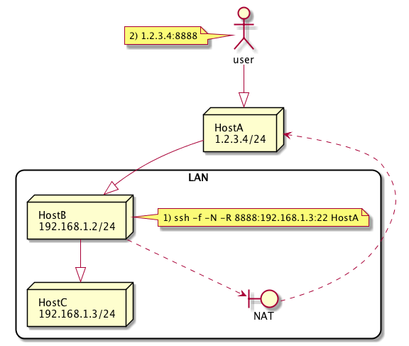

SSH
Table of Contents
| Author | Hao Ruan (haoru@cisco.com) |
| Date | 2018-06-25 17:46:41 |
Table of Contents
1 本地端口转发
空心箭头代表虚拟的 SSH 隧道
-g 表示监听于所有接口上
2 远程端口转发
空心箭头代表虚拟的 SSH 隧道
2.1 外网访问内网 SSH 服务
2.2 通用端口转发模式
-R [bind_address:]port:host:hostport

当省略 bind_address ，=port= 监听在 localhost 上，指定 bind_address 可以公开端口：
ssh -R \*:8080:localhost:80 -N root@example.com # or ssh -R 0.0.0.0:8080:localhost:80 -N root@example.com # or ssh -R "[::]:8080:localhost:80" -N root@example.com
如果使用 OpenSSH ，需要修改服务器端 /etc/ssh/sshd_config 配置：
GatewayPorts yes
3 指纹和公钥
3.1 删除指纹和公钥信息
sed -i -e '/^10.74.68.58/d' $HOME/.ssh/known_hosts
ssh-keygen -R 10.74.68.58
3.2 禁止检查指纹和公钥信息
ssh -l admin -o StrictHostKeyChecking=no 10.74.68.58
3.3 获取指纹和公钥信息
ssh-keyscan -H 10.74.68.58
3.3.1 更新指纹和公钥信息
ssh-keygen -R <IP> ssh-keyscan -H <IP> >> ~/.ssh/known_hosts
4 在远程机器上运行脚本
ssh user@server bash < /path/to/local/script.sh
5 将本地文件和远程的比较
ssh user@host cat /path/to/remotefile | diff /path/to/localfile -
6 cat 文件
ssh user@host 'mkdir -p .ssh && cat >> .ssh/authorized_keys' < ~/.ssh/id_rsa.pub